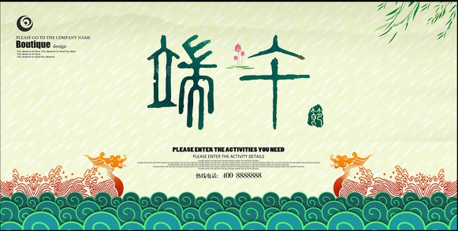

战国时代，诗人屈原很受楚王器重，然而屈原的主张遭到上官大夫靳尚为首的守旧派的反对，楚怀王渐渐疏远了屈原，有着远大抱负的屈原倍感痛心.屈原在流放途中，接连听到楚怀王客死和郢城攻破的噩耗后，万念俱灰，仰天长叹一声，投入了滚滚激流的汩罗江。这便是流传最广的端午节传说...

端午日赐衣 作者： 杜甫 宫衣亦有名，端午被恩荣。 细葛含风软，香罗叠雪轻。 自天题处湿，当暑著来清。 意内称长短，终身荷圣情。
战国时代，诗人屈原很受楚王器重，然而屈原的主张遭到上官大夫靳尚为首的守旧派的反对，楚怀王渐渐疏远了屈原，有着远大抱负的屈原倍感痛心.屈原在流放途中，接连听到楚怀王客死和郢城攻破的噩耗后，万念俱灰，仰天长叹一声，投入了滚滚激流的汩罗江。这便是流传最广的端午节传说...
端午日赐衣 作者： 杜甫 宫衣亦有名，端午被恩荣。 细葛含风软，香罗叠雪轻。 自天题处湿，当暑著来清。 意内称长短，终身荷圣情。
端午节这天是个祭祀日子，所以不能互相祝快乐，说祝福的话可以用“祥瑞、安康”等字句。
赛龙舟、端午食粽、挂艾草菖蒲、放风筝、洗浴兰汤、拴五色丝线、戴香包、饮蒲酒、雄黄酒、朱砂酒等
中国有很多：粽籺、雄黄酒、五黄、打糕 、煎堆。外国也不少：日本：粽子/槲叶糕+菖蒲酒...
历代诗词描述端午景象、缅怀古人的诗词佳作有很多。如范成大《竹枝歌》、苏轼《六幺令·天中节》...
五月初五端午节亦称为“端阳节”。此外端午节还称“午日节、五月节、龙舟节、浴兰节、诗人节”等
喝了雄黄酒，百病远远丢。（山西） 良辰当五日，偕老祝千年。（江苏）...
流传甚广的观点是端午节起源于纪念。闻一多先生认为端午节是古百越族龙图腾崇拜,还有端午节源于夏至。
后世附会"历史人物纪念说"主要有四种:纪念屈原说、纪念伍子胥说、纪念孝女曹娥说、纪念介子推说